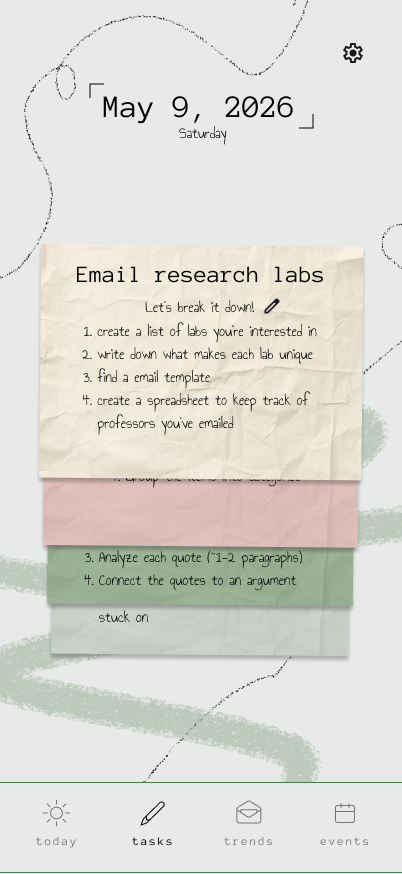
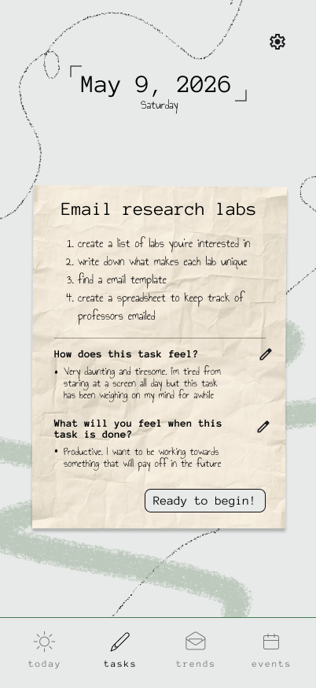
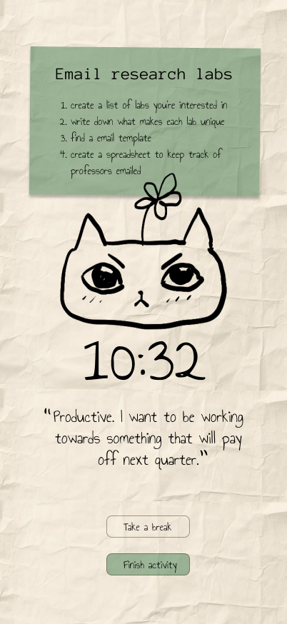
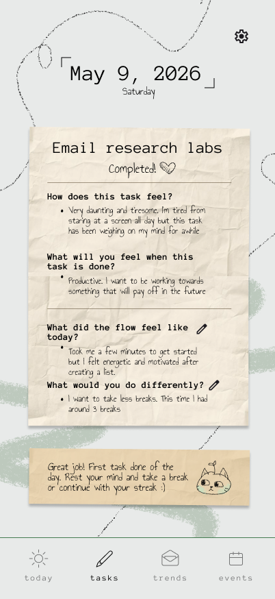
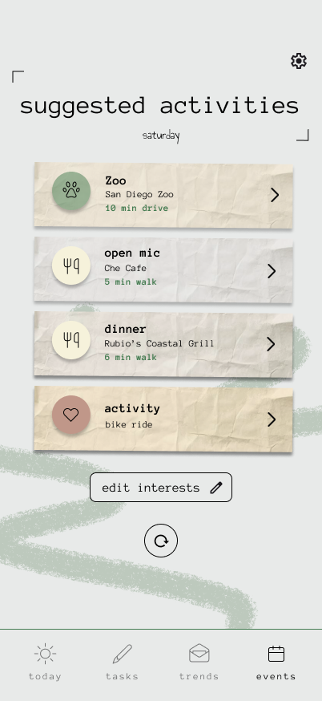
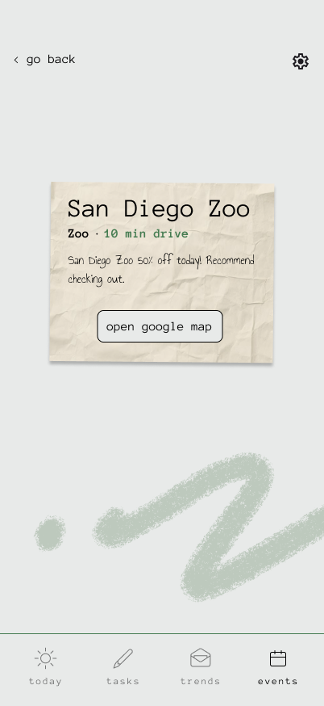
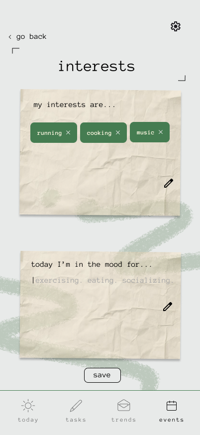

PROBLEM
Named after the ancient Roman philosopher, Seneca aims to solve the issue of phone usage through mindfulness and fulfilment outside the screen.
IF A USER WANTS TO SCROLL, THEY'LL SCROLL.
Traditional screen time apps focus on restriction and become hindrances to users as they look for ways to bypass a system that they set up.

OUR APPROACH
As avid phone users ourselves, we've found that our screentime is lowest when we are preoccupied with commitments, plans, and other fulfillments. Life is a vibrant mosaic of working, learning, exploring, socializing, and connecting. When we manage to remember this, social media not only seems like a waste of time, but becomes boring in comparison. Seneca would call this concept "Eudaimonia": flourishing in life.
HOW MIGHT WE ENCOURAGE USERS TO PURSUE ENGAGEMENTS OUTSIDE THE SCREEN?
HOW MIGHT WE DESIGN A BRAND AND MASCOT THAT IS UNIQUE AND FEELS APPROACHABLE?
OUR DESIGNS
Seneca: our mascot. He's a cat named after the ancient Roman philosopher, and is a symbol of inner peace.

I mixed messy illustrative elements, paper textures, and clean typewriter fonts to emanate a warmth that goes along with our "in-person is best" mindset.
Home page: we include a check-in to encourage mindfulness.




Events: we make exploration of the outside world easy for our users.



REFLECTIONS AND FUTURES
In the future I hope to affirm our assumptions through user testing, which we were unable to achieve within the initial 24 hour period. Ultimately, I hope that this app displays both a unique creative voice as well as the thoughtfulness put behind the solution.